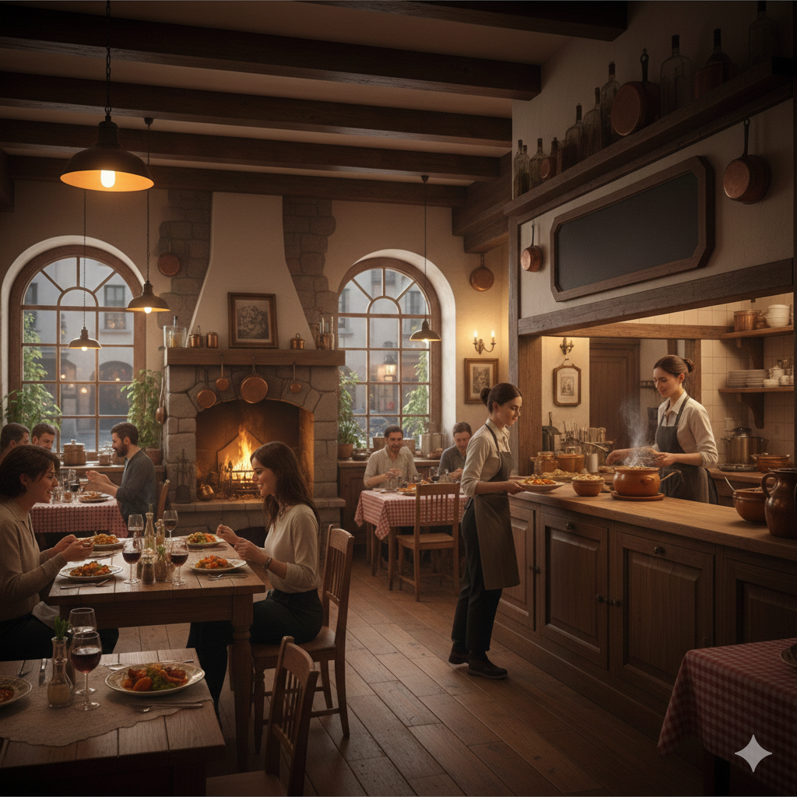

Over Oma's Kost
Bij Oma's Kost draait alles om gezelligheid en traditionele smaken. Onze gerechten worden met verse ingrediënten en liefde bereid.

Hartige, huiselijke gerechten
ReserverenBij Oma's Kost draait alles om gezelligheid en traditionele smaken. Onze gerechten worden met verse ingrediënten en liefde bereid.
Traditionele recepten, modern gepresenteerd. Elke maaltijd wordt met passie bereid.
Van sauzen tot desserts, alles is vers en huisgemaakt. Geniet van authentieke smaken.
Ons restaurant biedt een warme en gastvrije sfeer. Perfect om rustig te genieten van goed eten.